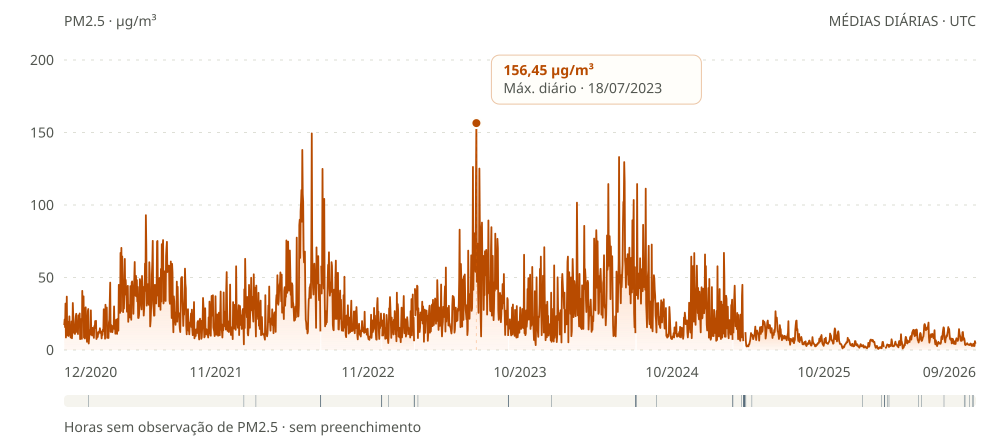
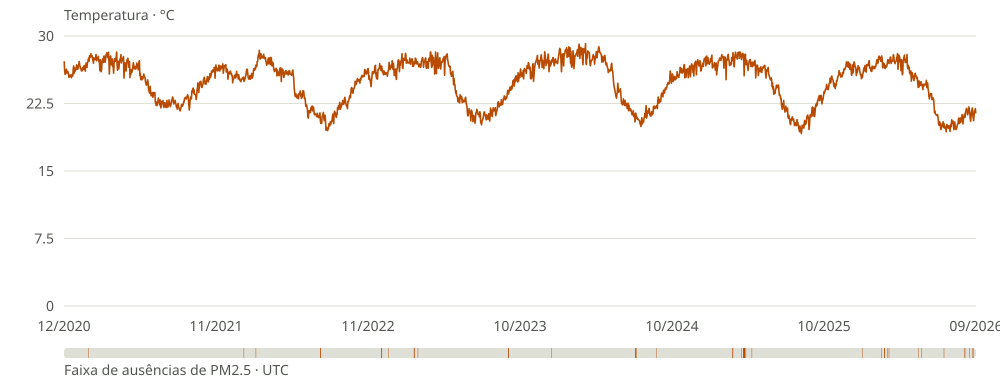
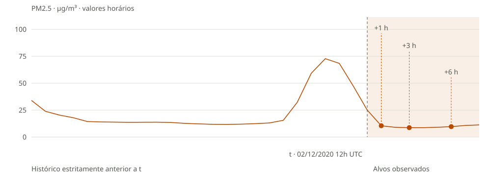

Preparar
Auditar as duas fontes e alinhar as horas, preservando lacunas e extremos.
INTELIGÊNCIA ARTIFICIAL APLICADA / LUANDA
DADOS ATMOSFÉRICOS. CONTEXTO LOCAL.
Investigo a previsão de PM2.5 em Luanda para 1, 3 e 6 horas, com históricos de poluição e meteorologia atribuídos à OpenWeather.
Acompanhar a evolução
02 / CONTEXTO
Partículas pequenas. Uma questão de qualidade do ar.
Luanda usa a mesma série de PM2.5 da preparação, atribuída à OpenWeather. A vista OMS fica separada. Pontos e ligações são referências geográficas, não estações certificadas nem movimentos do ar.
OpenWeather · histórico fornecido para Luanda. Outras cidades: sem histórico desta fonte neste site.
01/12/2020 12h–22/09/2026 11h UTC · dados fornecidos pelo autor; origem física não autenticada.
49.896 observações em 50.904 horas; 1.008 ausentes. Média das concentrações presentes, sem preencher lacunas.
Explorar a série e os horizontes · Conferir estatísticas e proveniência
| Período | Limites UTC | Média · µg/m³ | Máximo horário · µg/m³ | Cobertura · % | Horas observadas | Horas ausentes |
|---|---|---|---|---|---|---|
| Todo o histórico | 01/12/2020 12h–22/09/2026 11h | 24,44 | 568,32 | 98,02 | 49896 | 1008 |
| 2020 · parcial | 01/12/2020 12h–31/12/2020 23h | 16,92 | 159,41 | 100,00 | 732 | 0 |
| 2021 | 01/01/2021 00h–31/12/2021 23h | 27,57 | 408,15 | 99,73 | 8736 | 24 |
| 2022 | 01/01/2022 00h–31/12/2022 23h | 30,78 | 568,32 | 98,08 | 8592 | 168 |
| 2023 | 01/01/2023 00h–31/12/2023 23h | 30,11 | 546,46 | 98,63 | 8640 | 120 |
| 2024 | 01/01/2024 00h–31/12/2024 23h | 35,21 | 476,24 | 98,63 | 8664 | 120 |
| 2025 | 01/01/2025 00h–31/12/2025 23h | 11,45 | 273,90 | 97,26 | 8520 | 240 |
| 2026 · parcial | 01/01/2026 00h–22/09/2026 11h | 6,49 | 22,50 | 94,71 | 6012 | 336 |
Fonte atribuída: OpenWeather · Air Pollution API. Dados históricos fornecidos pelo autor, sem chamadas à API neste site. Ainda não houve treino dos modelos.
| Cidade | Ano | Média anual | Cobertura temporal |
|---|---|---|---|
| Luanda · Angola | — | Sem valor na base V8.0 | — |
| Nova Iorque · Estados Unidos | 2022 | 7,07 µg/m³ | 56% |
| Toronto · Canadá | 2023 | 9,40 µg/m³ | 98% |
| Bogotá · Colômbia | 2021 | 15,96 µg/m³ | 87% |
| Lima · Peru | 2024 | 22,23 µg/m³ | 75% |
| Buenos Aires · Argentina | 2014 | 10,11 µg/m³ | 91% |
| Londres · Reino Unido | 2019 | 11,21 µg/m³ | 95% |
| Paris · França | 2024 | 9,31 µg/m³ | 97% |
| Berlim · Alemanha | 2024 | 11,32 µg/m³ | 100% |
| Oslo · Noruega | 2024 | 8,48 µg/m³ | 86% |
| Joanesburgo · África do Sul | 2021 | 35,47 µg/m³ | 75% |
| Dacar · Senegal | 2024 | 53,07 µg/m³ | 74% |
| Adis Abeba · Etiópia | 2019 | 20,48 µg/m³ | 68% |
| Deli · Índia | 2019 | 104,54 µg/m³ | 85% |
| Mumbai · Índia | 2019 | 43,44 µg/m³ | 90% |
| Pequim · China | 2024 | 30,98 µg/m³ | 98% |
| Xangai · China | 2024 | 28,43 µg/m³ | 98% |
| Tóquio · Japão | 2019 | 10,83 µg/m³ | 99% |
| Bangkok · Tailândia | 2021 | 23,42 µg/m³ | 99% |
| Auckland · Nova Zelândia | 2023 | 9,00 µg/m³ | 63% |
Fonte: OMS · Ambient Air Quality Database V8.0 ↗ · contornos: Natural Earth (domínio público).
PM2.5 são partículas finas de até 2,5 micrómetros, capazes de penetrar profundamente no sistema respiratório. Fonte: EPA ↗
O estudo procura antecipar concentrações; os dados não representam necessariamente toda a cidade.
Definição, fontes e interpretação das concentrações.
03 / PERGUNTA E OBJECTIVO
Comparar persistência, Random Forest e LSTM, usando o histórico de PM2.5 e meteorologia, com avaliação cronológica.
Auditar as duas fontes e alinhar as horas, preservando lacunas e extremos.
Usar apenas o passado para formar 39 atributos e três conjuntos de amostras.
Medir MAE e RMSE por horizonte; usar R² como complemento. Modelação ainda planeada.
04 / PROPOSTA DE SOLUÇÃO
Integrar poluição e meteorologia numa base temporal comum, construir atributos e comparar três abordagens com o mesmo horizonte de avaliação.
Repetir a última concentração disponível: a referência a superar.
Combinar árvores de decisão sobre atributos do histórico.
Investigar dependências temporais com uma rede para sequências.
Mesmos períodos de teste, em ordem cronológica. MAE e RMSE em µg/m³; R² complementar.
Consultar métricas e protocoloPersistência, treino e avaliação continuam planeados. Os dados não substituem observações locais.
05 / ETAPAS METODOLÓGICAS
Operações da mesma aplicação; cada etapa liga ao método completo.
06 / EVOLUÇÃO DO PROJECTO
Seleccione uma etapa: previsto, entregue e pendências.
ETAPA 01 / 06
Origem atribuída à OpenWeather. Duas fontes, uma análise temporal.
ETAPA 02 / 06
Grade de 50.904 horas. Acrescentar posições temporais não cria medições.
ETAPA 03 / 06
Amostras mantidas por horizonte · conjuntos independentes, com 39 atributos cada.
ETAPA 04 / 06
Esquema do protocolo previsto. Ainda sem previsões produzidas.
ETAPA 05 / 06
Dois modelos previstos; treino e validação continuam por executar.
ETAPA 06 / 06
Critérios definidos. Nenhum valor de desempenho foi calculado.
CSV conferidos em 24/11/2026. A sequência não mede percentagem de progresso; amostras construídas não são modelos treinados. Consultar o histórico e os documentos de cada marco.
07 / RESULTADOS E MATERIAIS
01/12/2020–22/09/2026 · UTC. CSV fornecidos pelo autor e atribuídos à OpenWeather; origem física não autenticada.
Visão completa. Amplie para ler os detalhes.
Todo o histórico · resolução do gráfico: diária; dados de origem: horários.
Maior ausência: 120 horas (121 h entre observações). Extremos preservados, sem atribuição de causas.
| Mês UTC | Horas observadas | Horas ausentes | PM2.5 médio · µg/m³ |
|---|---|---|---|
| 2020-12 | 732 | 0 | 16.9157 |
| 2021-01 | 720 | 24 | 18.6909 |
| 2021-02 | 672 | 0 | 12.9484 |
| 2021-03 | 744 | 0 | 18.5237 |
| 2021-04 | 720 | 0 | 35.9842 |
| 2021-05 | 744 | 0 | 37.6318 |
| 2021-06 | 720 | 0 | 41.4999 |
| 2021-07 | 744 | 0 | 50.4807 |
| 2021-08 | 744 | 0 | 33.5983 |
| 2021-09 | 720 | 0 | 24.3665 |
| 2021-10 | 744 | 0 | 14.9491 |
| 2021-11 | 720 | 0 | 20.218 |
| 2021-12 | 744 | 0 | 20.6324 |
| 2022-01 | 720 | 24 | 26.573 |
| 2022-02 | 648 | 24 | 29.1099 |
| 2022-03 | 744 | 0 | 18.3292 |
| 2022-04 | 720 | 0 | 33.3705 |
| 2022-05 | 744 | 0 | 40.318 |
| 2022-06 | 720 | 0 | 62.2116 |
| 2022-07 | 696 | 48 | 52.0126 |
| 2022-08 | 744 | 0 | 37.1864 |
| 2022-09 | 720 | 0 | 22.0212 |
| 2022-10 | 744 | 0 | 15.8189 |
| 2022-11 | 720 | 0 | 14.6711 |
| 2022-12 | 672 | 72 | 17.8051 |
| 2023-01 | 744 | 0 | 17.5642 |
| 2023-02 | 624 | 48 | 19.8938 |
| 2023-03 | 720 | 24 | 22.9863 |
| 2023-04 | 720 | 0 | 24.271 |
| 2023-05 | 744 | 0 | 25.0054 |
| 2023-06 | 720 | 0 | 35.2358 |
| 2023-07 | 744 | 0 | 59.6474 |
| 2023-08 | 744 | 0 | 48.9458 |
| 2023-09 | 697 | 23 | 36.0207 |
| 2023-10 | 719 | 25 | 16.7797 |
| 2023-11 | 720 | 0 | 25.4496 |
| 2023-12 | 744 | 0 | 27.38 |
| 2024-01 | 720 | 24 | 19.8099 |
| 2024-02 | 696 | 0 | 34.9364 |
| 2024-03 | 744 | 0 | 38.2936 |
| 2024-04 | 720 | 0 | 38.3485 |
| 2024-05 | 744 | 0 | 48.4142 |
| 2024-06 | 720 | 0 | 52.8796 |
| 2024-07 | 672 | 72 | 55.1382 |
| 2024-08 | 744 | 0 | 44.218 |
| 2024-09 | 696 | 24 | 27.4793 |
| 2024-10 | 744 | 0 | 12.3146 |
| 2024-11 | 720 | 0 | 17.8483 |
| 2024-12 | 744 | 0 | 33.8962 |
| 2025-01 | 744 | 0 | 21.7796 |
| 2025-02 | 672 | 0 | 22.3206 |
| 2025-03 | 625 | 119 | 22.5378 |
| 2025-04 | 599 | 121 | 7.6652 |
| 2025-05 | 744 | 0 | 14.658 |
| 2025-06 | 720 | 0 | 13.3378 |
| 2025-07 | 744 | 0 | 8.894 |
| 2025-08 | 744 | 0 | 6.8128 |
| 2025-09 | 720 | 0 | 5.126 |
| 2025-10 | 744 | 0 | 6.8418 |
| 2025-11 | 720 | 0 | 5.53 |
| 2025-12 | 744 | 0 | 3.6293 |
| 2026-01 | 720 | 24 | 3.9742 |
| 2026-02 | 600 | 72 | 2.2879 |
| 2026-03 | 696 | 48 | 3.7809 |
| 2026-04 | 720 | 0 | 6.9003 |
| 2026-05 | 696 | 48 | 11.2167 |
| 2026-06 | 720 | 0 | 8.433 |
| 2026-07 | 720 | 24 | 9.0446 |
| 2026-08 | 696 | 48 | 7.3101 |
| 2026-09 | 444 | 72 | 3.8347 |
Temperatura, humidade, pressão ao nível do mar, velocidade e direcção do vento. Meteorologia nas 50.904 horas da grade; 51.890 linhas de origem e 51.744 horas únicas, com 146 duplicações equivalentes nas variáveis usadas.
Visão completa. Amplie para ler os detalhes.

Referências espaciais separadas por cerca de 3,57 km; o nome “Quatro de Fevereiro” não certifica medições instrumentais dessa estação.
Visão completa. Amplie para ler os detalhes.

amostras mantidas · 1.780 excluídas face à grade · 39 atributos
amostras mantidas · 1.836 excluídas face à grade · 39 atributos
amostras mantidas · 1.920 excluídas face à grade · 39 atributos
Conjuntos independentes; não somar as contagens. Alvos e atributos conferidos nos CSV. Sem treino, divisão temporal ou métricas preditivas.
Da pergunta sobre o ar de Luanda à construção das amostras: animações para distinguir dados, preparação e previsão.
Escolha o tema para posicionar o vídeo. A reprodução começa pelo controlo do leitor.
Como ler esta apresentação: voz sintética e Luanda esquemática. As curvas vêm dos CSV; os pontos futuros são alvos históricos, não previsões. A animação explica o método, sem simular uma execução da aplicação.
Série diária e meteorologia (CSV) · Cobertura mensal (CSV) · Verificações e hashes (JSON) · Relatório de preparação (PDF) · Método completo
Contagens recalculadas dos CSV; o relatório multivariado mantém o rótulo fixture de engenharia. Disponibilidade de 1 h é hipótese retrospectiva, não latência comprovada.
08 / APLICAÇÃO · MODELO C4
Fontes, investigador e aplicação de preparação; as operações detalhadas estão nas etapas.
Explorar o cenário dinâmico completo e as descrições textuais.